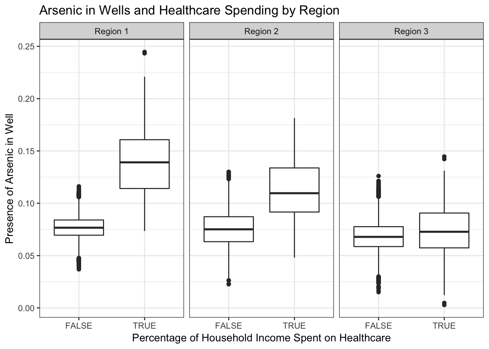
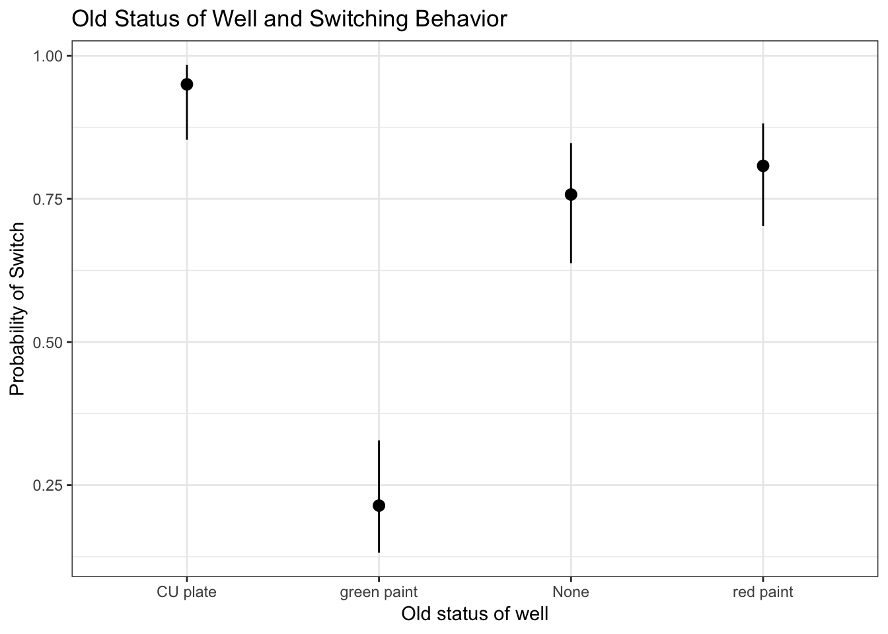

Arsenic in Wells
Lama Ahmad
12/5/2018
PART 1
The presence of arsenic in a well does lead to an increase in percentage of household income spent on healthcare. When there is no arsenic in the well, the percentage of household income spent on healthcare is on average .07%. When there is arsenic in the well, the percentage of household income spent on healthcare is on average .11%.
When analyzing this effect by region, it is found that for Region 1 there is an average of 0.06% increase in percentage of household income spent on healthcare when arsenic is present. For Region 2, there is an average of 0.02% increase in percentage of household income spent on healthcare when arsenic is present. For Region 3, there is an average of .05% increase in percentage of household income spent on healthcare when arsenic is precent.
Therefore, the regional findings suggest that in term of impoverishment increased through increased spending on healthcare caused by arsenic found in wells, Region 1 has the largest difference when comparing percentage of household income spent on healthcare when there is arsenic present in the well.

PART 2
RELATIONSHIP TO OWNER PREDICT SWITCH
Individuals were surveyed about their relationship with the well owner, with the assumption that information about the well could be spread differently depending on how close of a tie that the individual had with the well owner. People who reported that the well owner was close family on average had a 70% likelihood of switching wells. People who reported that the well owner was a neighbor on average had a 50% likelihood of switching wells. Lastly, though not significant and therefore uncertain due to a wide confidence interval, people who reported that the well owner was in the same bari had on average a 70% likelihood of switching wells.
REPORTED STATUS OF WELL PREDICTED SWITCH
If people know that they the status of the well is unsafe, on average, they have an 86% proability of switching. If people don’t know the status of the well, they also have an 86% percent chance of switching on average. However, the people who don’t know the status of the well also have the most uncertain outcomes. The confidence interval ranges from a 68% cchance of swtiching to a 95% chance of switching, and the results are not significant. This indicates that people who don’t know the status of a well are a vulnerable group to the negative effects of wells that are contaminated by arsenic.
HOW KNOW STATUS OF WELL PREDICT SWITCH
(Dropped responses that were not coded in codebook, 1, 2, and 3 included only)
Individuals found out about the status of the well in various ways. When surveyed about how they found out about the status of the well, people who reported that they knew about the status of the well through a CU Result were on average 86% likely to switch. People who said they found out about the status of the well through the paint were on average 58% likely to switch. People who found out about the status of the well through other means were on average 60% likely to switch, but the results of people who found out about the status of the well through other means are not significant and therefore uncertain. These results indicate that a CU Card is again quite an important determinanat for well switching in households with arsenic in their wells.
HAVING A CU MEDICAL CARD PREDICT SWITCH
People who have a CU Medical card are most likely to switch wells when a well is found to be contaminated with arsenic. On average, people who have a CU Medical card are 72% likely to switch. People who do not have a CU Medical card are only about 51% likely to switch. However, this result is not significant because it is more uncertain, the confidence interval of switching ranges from 40% to 61%.

PROBABILITY OF SWITCH BASED ON OLDSTAT
The probability of switching based on status which was visible on the well was the highest when there was a CU plate present, with an average of 95% switching based on wells that had a CU plate present. Comparatively, red paint (which is inferred to indicate a well that is not safe), only had an average of 80% switching and was not a significant result.

PROBABILITY OF SWITCH BASED ON NEWSTAT
Meanwhile, the new plate indicators on the well seemed to successfully predict switching behavior. When the plate indicated that the well was unsafe, there was an 85% probability of switching on average. When the plate indicated that the well was safe, there was only a 17% probability of switching.
RECOMMENDATIONS
One of the ways to increase switching behavior is also creating a clear and widely understood method for determining which wells are safe to use and which are not. From the codebook and the results of the analyses on switching behavior and indicators of status of the well (Newstat and Oldstat), it seems that there are certain indicators that allow for a greater probability of switching than others.
A clear indicator of switching behavior is also strongly linked to how information is spread, and what information people have. People who did not know the status of the well had a lot of uncertainty about whether they would switch or not compared to people who did know that the well was unsafe. Combined with a more clear and systemitized way of indicating which wells are safe and which are not safe, a way of educating key people in the village about the safety of wells is crucial for increasing switching behavior.
By key people, I mean well owners and leaders in villages. Households tended to switch more often if they found out about the status of the well through close family or the same bari. If well owners were more educated on how to disemminate that information, it would spread not just to their family and friends, but also to others who used their well. They could also be educated on best practices for testing, and then placing clear markers on the well to help people know that the well was unsafe.
Finally, in my analyses I find that having a CU Medical Card greatly increases switching behavior. If possible, NGO and policy makers should focus on creating accessible medical services that can be coupled with education initiatives to ensure that people have access to clean and healthy water and are making informed decisions about the wells they get water to drink and cook with.
APPENDICES
Click here to see code: https://github.com/lama-ahmad/DataAnalysis-R/blob/master/arsenicinwells.Rmd
Problem 1
summary(lm(pct_hhinc_healthcare ~ anyArs, data=wells))##
## Call:
## lm(formula = pct_hhinc_healthcare ~ anyArs, data = wells)
##
## Residuals:
## Min 1Q Median 3Q Max
## -0.109969 -0.009472 0.000189 0.009680 0.131871
##
## Coefficients:
## Estimate Std. Error t value Pr(>|t|)
## (Intercept) 7.380e-02 6.643e-05 1110.91 <2e-16 ***
## anyArsTRUE 3.898e-02 7.283e-04 53.53 <2e-16 ***
## ---
## Signif. codes: 0 '***' 0.001 '**' 0.01 '*' 0.05 '.' 0.1 ' ' 1
##
## Residual standard error: 0.01469 on 49272 degrees of freedom
## Multiple R-squared: 0.05496, Adjusted R-squared: 0.05494
## F-statistic: 2865 on 1 and 49272 DF, p-value: < 2.2e-16summary(lm(pct_hhinc_healthcare ~ anyArs * Region, data=wells))##
## Call:
## lm(formula = pct_hhinc_healthcare ~ anyArs * Region, data = wells)
##
## Residuals:
## Min 1Q Median 3Q Max
## -0.071731 -0.009175 -0.000146 0.009192 0.105814
##
## Coefficients:
## Estimate Std. Error t value Pr(>|t|)
## (Intercept) 0.0767417 0.0001005 763.584 <2e-16 ***
## anyArsTRUE 0.0621012 0.0010867 57.148 <2e-16 ***
## RegionRegion 2 -0.0014337 0.0001517 -9.453 <2e-16 ***
## RegionRegion 3 -0.0086093 0.0001549 -55.566 <2e-16 ***
## anyArsTRUE:RegionRegion 2 -0.0253526 0.0016452 -15.410 <2e-16 ***
## anyArsTRUE:RegionRegion 3 -0.0556854 0.0017178 -32.416 <2e-16 ***
## ---
## Signif. codes: 0 '***' 0.001 '**' 0.01 '*' 0.05 '.' 0.1 ' ' 1
##
## Residual standard error: 0.01402 on 49268 degrees of freedom
## Multiple R-squared: 0.1382, Adjusted R-squared: 0.1381
## F-statistic: 1579 on 5 and 49268 DF, p-value: < 2.2e-16Problem 2
In part 2, I subsetted the data to only include responses in which anyArs was equal to True. I made this decision because we are only interested in results that explain the switching behavior of people who did have arsenic in their wells.
In all questions, if there were results that seemed to be miscoded or that I could not infer what they meant from the code book, I did not include them in my predictions for Switching and only included variables that I could be sure of what the response meant based on the code book.
#Relationship to Well Owner / Predict Switch
summary(glm.2.1)##
## Call:
## glm(formula = Switch ~ Rel, family = binomial(link = "logit"),
## data = wells2, na.action = na.exclude)
##
## Deviance Residuals:
## Min 1Q Median 3Q Max
## -1.5610 -1.5518 0.8374 0.8374 1.1774
##
## Coefficients:
## Estimate Std. Error z value Pr(>|z|)
## (Intercept) 0.86771 0.12099 7.172 7.4e-13 ***
## Rel2 -0.02041 0.33148 -0.062 0.9509
## Rel3 -0.86771 0.37368 -2.322 0.0202 *
## ---
## Signif. codes: 0 '***' 0.001 '**' 0.01 '*' 0.05 '.' 0.1 ' ' 1
##
## (Dispersion parameter for binomial family taken to be 1)
##
## Null deviance: 509.09 on 409 degrees of freedom
## Residual deviance: 503.77 on 407 degrees of freedom
## AIC: 509.77
##
## Number of Fisher Scoring iterations: 4#Reported Status of Well / Predict Switch
summary(glm.2.2)##
## Call:
## glm(formula = Switch ~ Status, family = binomial(link = "logit"),
## data = wells2, na.action = na.exclude)
##
## Deviance Residuals:
## Min 1Q Median 3Q Max
## -2.0074 -0.5975 0.5365 0.5365 1.9033
##
## Coefficients:
## Estimate Std. Error z value Pr(>|z|)
## (Intercept) 1.865546 0.176667 10.560 <2e-16 ***
## Status1 -3.498240 0.318636 -10.979 <2e-16 ***
## Status2 0.006257 0.565395 0.011 0.991
## ---
## Signif. codes: 0 '***' 0.001 '**' 0.01 '*' 0.05 '.' 0.1 ' ' 1
##
## (Dispersion parameter for binomial family taken to be 1)
##
## Null deviance: 509.09 on 409 degrees of freedom
## Residual deviance: 333.70 on 407 degrees of freedom
## AIC: 339.7
##
## Number of Fisher Scoring iterations: 4#How know status of well / Predict Switch
summary(glm.2.3)##
## Call:
## glm(formula = Switch ~ Howknow, family = binomial(link = "logit"),
## data = wells3, na.action = na.exclude)
##
## Deviance Residuals:
## Min 1Q Median 3Q Max
## -1.9975 0.5407 0.5407 0.5407 1.0365
##
## Coefficients:
## Estimate Std. Error z value Pr(>|z|)
## (Intercept) 1.8489 0.2609 7.086 1.38e-12 ***
## Howknow2 -1.5080 0.3486 -4.325 1.52e-05 ***
## Howknow3 -1.4435 0.9494 -1.520 0.128
## ---
## Signif. codes: 0 '***' 0.001 '**' 0.01 '*' 0.05 '.' 0.1 ' ' 1
##
## (Dispersion parameter for binomial family taken to be 1)
##
## Null deviance: 231.14 on 206 degrees of freedom
## Residual deviance: 210.68 on 204 degrees of freedom
## AIC: 216.68
##
## Number of Fisher Scoring iterations: 4#CU Medical Card / Predict Switch
summary(glm.2.4)##
## Call:
## glm(formula = Switch ~ Cucard, family = binomial(link = "logit"),
## data = wells2, na.action = na.exclude)
##
## Deviance Residuals:
## Min 1Q Median 3Q Max
## -1.6018 -1.1963 0.8058 0.8058 1.1586
##
## Coefficients:
## Estimate Std. Error z value Pr(>|z|)
## (Intercept) 0.04445 0.21087 0.211 0.833042
## Cucard1 0.91380 0.24685 3.702 0.000214 ***
## Cucard2 16.52162 581.97512 0.028 0.977352
## ---
## Signif. codes: 0 '***' 0.001 '**' 0.01 '*' 0.05 '.' 0.1 ' ' 1
##
## (Dispersion parameter for binomial family taken to be 1)
##
## Null deviance: 509.09 on 409 degrees of freedom
## Residual deviance: 482.45 on 407 degrees of freedom
## AIC: 488.45
##
## Number of Fisher Scoring iterations: 15#Old Stat Well / Predict Switch
summary(glm.2.7)##
## Call:
## glm(formula = Switch ~ Oldstat, family = binomial(link = "logit"),
## data = wells4, na.action = na.exclude)
##
## Deviance Residuals:
## Min 1Q Median 3Q Max
## -2.4478 -0.6945 0.3203 0.6536 1.7552
##
## Coefficients:
## Estimate Std. Error z value Pr(>|z|)
## (Intercept) 1.1394 0.2872 3.967 7.28e-05 ***
## Oldstat1 1.8050 0.6583 2.742 0.00611 **
## Oldstat2 0.2957 0.4063 0.728 0.46676
## Oldstat3 -2.4387 0.4091 -5.961 2.50e-09 ***
## ---
## Signif. codes: 0 '***' 0.001 '**' 0.01 '*' 0.05 '.' 0.1 ' ' 1
##
## (Dispersion parameter for binomial family taken to be 1)
##
## Null deviance: 345.49 on 273 degrees of freedom
## Residual deviance: 246.04 on 270 degrees of freedom
## AIC: 254.04
##
## Number of Fisher Scoring iterations: 5#New Stat Well / Predict Switch
summary(glm.2.6)##
## Call:
## glm(formula = Switch ~ Newstat, family = binomial(link = "logit"),
## data = wells2, na.action = na.exclude)
##
## Deviance Residuals:
## Min 1Q Median 3Q Max
## -1.9457 -0.6173 0.5714 0.5714 1.8718
##
## Coefficients:
## Estimate Std. Error z value Pr(>|z|)
## (Intercept) 1.7296 0.1583 10.93 <2e-16 ***
## Newstat1 -3.2908 0.3102 -10.61 <2e-16 ***
## ---
## Signif. codes: 0 '***' 0.001 '**' 0.01 '*' 0.05 '.' 0.1 ' ' 1
##
## (Dispersion parameter for binomial family taken to be 1)
##
## Null deviance: 509.09 on 409 degrees of freedom
## Residual deviance: 354.89 on 408 degrees of freedom
## AIC: 358.89
##
## Number of Fisher Scoring iterations: 4